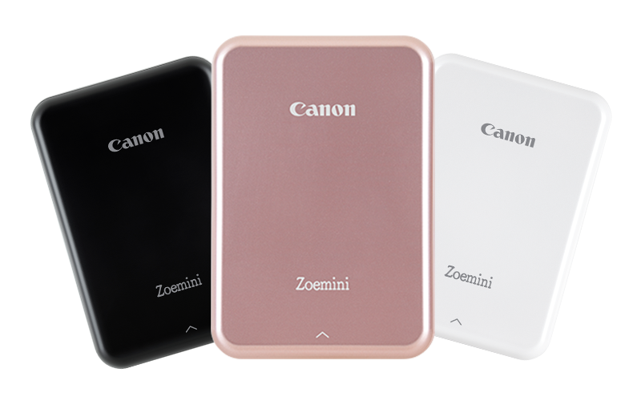

Беззеркальная камера обладает сменной оптикой и современным функционалом. Главное отличие – в отсутствии зеркал и наличии дисплея вместо оптического видоискателя. Свет попадает в объектив и передается на матрицу, после чего на экране отображается будущий кадр с примененными настройками экспозиции, ISO и др.

1. Лучшая камера для опытных видеографов: Canon EOS R5 C
2. Лучшая камера для съемки видео в экстремальных условиях: Canon EOS R3
3. Лучшая камера для гибридной съемки: Canon EOS R5
4. Лучшая камера для съемки при слабом освещении: Canon EOS R6
5. Лучшая камера для видеоблогеров: Canon EOS M50 Mark II
1. Найдите панель принтера и откройте ее, чтобы был виден отсек с картриджем.
2. Затем необходимо извлечь картридж из коробки.
3. Извлеките новый картридж из упаковки, положите ее в сторону.
4. Вставьте картридж аккуратно в гнездо до характерного щелчка.
5. В завершении процедуры закройте панель на корпусе.
Наримеp модель Canon Zoemini.
